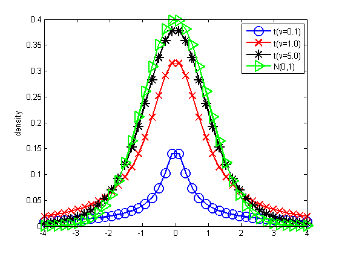
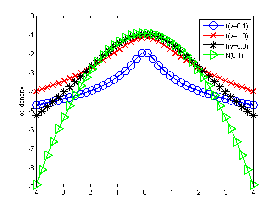

Compare Student and Gaussian pdfs
for useLog = [false true]
dofs = [0.1 1 5];
xs = linspace(-4, 4, 40);
figure;
[styles, colors, symbols, styleStr] = plotColors;
N = length(dofs);
for i=1:N
dof = dofs(i);
model.mu = 0; model.Sigma = 1; model.dof = dof;
ps = exp(studentLogprob(model, xs));
if useLog
plot(xs, log(ps), styleStr{i}, 'linewidth', 2, 'markersize', 12);
else
plot(xs, ps, styleStr{i}, 'linewidth', 2, 'markersize', 12);
end
hold on
legendStr{i} = sprintf('t(%s=%2.1f)', '\nu', dof);
end
ps = gaussProb(xs, 0, 1);
if useLog
plot(xs, log(ps), styleStr{N+1}, 'linewidth', 2, 'markersize', 12);
else
plot(xs, ps, styleStr{N+1}, 'linewidth', 2, 'markersize', 12);
end
legendStr{N+1} = 'N(0,1)';
legend(legendStr)
if(useLog)
ylabel('log density');
printPmtkFigure('studentTvsGaussLog');
else
ylabel('density');
printPmtkFigure('studentTvsGauss');
end
end
 